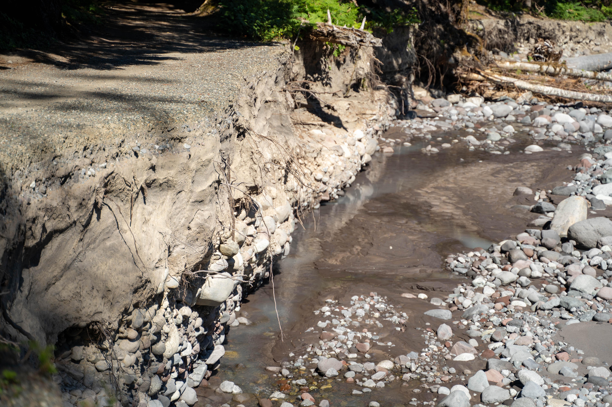

Road erosion
This is another place where erosion has destroyed part of a road. You can see the layers of soil and rock that were under the road when it was built.
Tahoma Science
This is another place where erosion has destroyed part of a road. You can see the layers of soil and rock that were under the road when it was built.